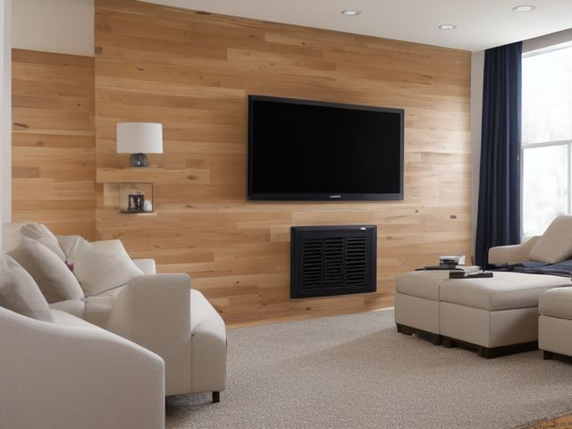

Living Room micro zone
The Media Center
Keep the television, sound and consoles working, cool and cabled so a fault is findable.
One session: 45-75 min. most of it behind the unit, sorting cables and working out what is still plugged into what

What done looks like
Every cable labelled at both ends, running in one bundle to a single labelled power strip. Nothing plugged in that serves a device you no longer own, a clear hand's gap of air around the amplifier and console vents, and every game controller and remote in one bin instead of four locations.
Check these before you start
- Burn or fireBlocked console and amplifier vents, dust packed on the back of the television, and one power strip plugged into another are the fire risks here, and all three are hidden behind the unit.
- Fall, cut, or crushAn unanchored television on a low unit tips forward when a child pulls on the edge or climbs the shelf below it.
- Water and electricityDrinks set on top of the console or on the floor beside the power strip put liquid directly over live connections.
What to have on hand before you start
These are types of thing, not brands. If you already own something that does the job, that is the right one to use. Each says which pass needs it and what to watch out for.
- Color-coded microfiber cloth set ×12
Wipe, dust, and dry surfaces, in the Shine pass.
Wash by use color; avoid fabric softener. - Neutral pH multi-surface cleaner
Routine cleaning of sealed surfaces, in the Shine and Sustain passes.
Verify surface compatibility; lock around children and pets. - Compact vacuum with attachments
Remove dust, crumbs, and debris, in the Shine pass.
Use appropriate attachment. - Keep, Relocate, Donate, Recycle, Trash container set ×5
Support rapid item routing during Sort, in the Sort pass.
Do not block exits. - Portable cleaning caddy
Transport and contain cleaning inputs, in the Straighten, Shine and Sustain passes.
Secure chemicals from children and pets. - Portable label maker
Create durable standardized labels, in the Standardize and Sustain passes.
Follow surface and adhesive guidance. - Removable write-on labels
Create temporary or adjustable visual controls, in the Standardize pass.
Test on delicate finishes.
Only if your media center has one: 8 more
Not every media center needs these. Each one is here because some do, and the reason is next to it.
- Magazine File ×4
Contain manuals, papers, slim books, or activity books, in the Straighten, Standardize and Sustain passes.
Do not overload; anchor wall-mounted or tall systems where required. - Board Game Component Bags
Keep game pieces complete, in the Straighten, Standardize and Sustain passes.
Do not overload; anchor wall-mounted or tall systems where required. - Cable Management Kit
Secure and label device cords, in the Straighten, Standardize and Sustain passes.
Do not overload; anchor wall-mounted or tall systems where required. - Controller Dock
Charge and contain game controllers, in the Straighten, Standardize and Sustain passes.
Do not overload; anchor wall-mounted or tall systems where required. - Cord Label Set
Identify chargers and device cables, in the Standardize and Sustain passes.
Install and use according to product instructions. - Remote Control Tray
Create one visible home for controls, in the Straighten, Standardize and Sustain passes.
Do not overload; anchor wall-mounted or tall systems where required. - Surge Protector with Overload Protection
Control device charging and electronics, in the Straighten and Safety passes.
Install and use according to product instructions. - Shelf Location Label Set
Standardize location naming, in the Standardize and Sustain passes.
Install and use according to product instructions.
The six passes, in order
Work them in this order. Sorting after you have arranged things means arranging things you were about to remove.
Sort
Decide what stays. Everything else leaves the zone now.
Unplug and lay out every cable, then name the device each one serves. The composite leads, the disc player nobody has loaded in a year, the streaming stick from two televisions ago and the charger with the old connector all leave. Discs and games get one decision each: sell, lend, or recycle.
Straighten
Give what stays a home, placed where the hand actually reaches.
Bundle the cables by device path with velcro ties so one console can be pulled out without disturbing the sound bar. Controllers and remotes get one ventilated bin, set at the height of whoever plays, not on top of the unit where they slide behind it.
Shine
Clean it, and use the cleaning to inspect what you cannot see when it is full.
Vacuum the dust off the console and amplifier vents and the whole back panel of the television, because dust is what turns a warm device into a hot one. Wipe the screen with a dry microfiber cloth only, never a spray.
Surface by surface, all 7 of them, with what to use on each.
Safety
Make the zone safe for everybody who uses it, including the shortest person.
Heat and power are the two hazards behind this unit: keep the vents unblocked, never run one power strip into another, and look at every cable for a cracked or scorched section as you handle it. Anchor the television to the wall or to the unit, because a screen tipping off the front edge is the single worst thing this room can do to a child.
Standardize
Write down the best way you know today, so it survives you forgetting.
Label both ends of a cable the day it goes in and label the strip's outlets to match, so a cable that belongs to nothing is obvious at a glance. See Chapter 14, visual controls.
Sustain
Attach the reset to something that already happens, so it keeps itself.
When you swap a device in or add one, it does not get switched on until its cable is labelled at both ends.
The dead electronics shelf
Somewhere in this unit is a working device nobody has switched on in a year, and a box of cables kept because they might fit something. You have avoided this because the devices cost real money and letting them go feels like admitting the money is gone. The money is already gone. The rule: power each device on now. If it does not boot, or it boots and nobody in the house asks for it within the month, it goes to recycling or resale this week. For a cable, name the device it serves out loud before you finish picking it up, or it leaves, because an unnamed cable will still be unnamed next year.
Cleaning it properly, surface by surface
Dust is what turns a warm device into a hot one, so the real work here is the vents and the back panel, not the screen. Work top down, brush the dust out of every slot, and touch the screen with a dry cloth only.
Work down, not across. Whatever comes off a high surface lands on the one below it, so cleaning the floor first means cleaning it twice.
Carry these in with you. Portable cleaning caddy; Compact vacuum with attachments (brush head); Color-coded microfiber cloth set; Neutral pH multi-surface cleaner; Small detail brush for the vent slots (not in this zone's list).
- The top of the unit
Start on the top surface with a cloth just damp with neutral pH cleaner. This is the ledge where dust settles thickest. - The television screen
Wipe the screen with a dry microfiber cloth only, in slow straight passes. Never spray anything onto a screen and never reach for a paper towel, which scratches the coating. - The television back panel and bezel
Vacuum the whole back panel and the bezel with a brush head, working the dust out of the ridges. This is the dust that turns a warm set into a hot one. - The console and amplifier vent slots
Brush and vacuum every vent slot on the top and back of each device. If dust has matted solid in a slot, loosen it with a soft detail brush first, then lift it away with the vacuum. - The shelf surfaces and front edges
Wipe each shelf and its front edge with the damp cloth, moving devices forward rather than wiping around them. - The cable bundle, power strip and floor behind
Wipe the cable bundle and the outside of the power strip with a barely damp cloth, keeping moisture away from the socket faces, and dry it. Then vacuum the floor behind the unit where dust and pet hair pack in against the wall. - The controllers and remotes
Wipe the grips, buttons and thumbstick collars with a barely damp cloth and dry them. This is the grime you hand from person to person.
Inspect as you clean. Cleaning is the only time you see the zone empty, so use it.
- A hot-plastic or scorched smell around the back panel, strongest near the amplifier
- A power strip, plug, or socket face that is warm to the touch or browning at the edges
- A console or amplifier fan that has grown noticeably louder than it used to run
- Dust matted into a solid felt across a vent slot rather than loose enough to lift
- A cable sheath gone stiff or tacky with heat where it bends behind the unit
The standard that keeps it fixed
Every cable is labelled at both ends and every device has clear air on its vents.
Reset trigger. When the credits roll and you switch the television off, the controllers go back in their bin on the way out of the room.
The rest of the living room, in working order
Each of these is one session on its own. Finish this zone before you open the next.
- The Sofa and Seating
- The Coffee Table
- The Media Center, you are here
- The Bookshelves and Display
- The Side Tables and Lighting
- The Floor and Circulation Path
The Living Room in full, with what each of the 6 zones is for
Related reading
- What is 6S?
- This zone's safety pass, in full
- Is one spot in this zone always the one you skip?
- Why this zone gets messy again
- Decluttering vs. organizing
- Before you buy storage for this zone
- Still does not fit, even after the honest count?
- Does something in this zone actually get used somewhere else?
- Stuck on one item in this zone?
- Written the standard, but nobody else follows it?
- Does everyone in the house agree what "done" looks like here?
- Does more than one person use this zone?
- Found a duplicate of something in this zone?
- Why the standard above names one home per category
- Is the everyday item in this zone actually the easy one to reach?
- Not sure whether to keep something in this zone?
- Does this zone keep running out of something?
- Started this zone and stalled partway through?
- Have you stopped noticing the clutter in this zone?
When you want it off the screen
Carry The Media Center into the room
The method above is complete and free. The Whole House Print Pack puts The Media Center and the other 113 micro zones on 684 printable cards, so the steps you just read are not stuck behind a phone screen while your hands are full.
The Print Pack, 19 dollarsJust this zone, 4 dollarsOr draw a card free
The Media Center on its own is 4 dollars for 6 cards. All 114 micro zones is 19 dollars for 684. The whole house is the better buy; the single zone is here so you can take only what you are working on.
If The Media Center keeps fighting back, the real problem usually sits somewhere else in the room. A one hour virtual consult is 250 dollars: we find the function, the friction and the root cause together, and you keep a written standard for the space. See what a consult covers.